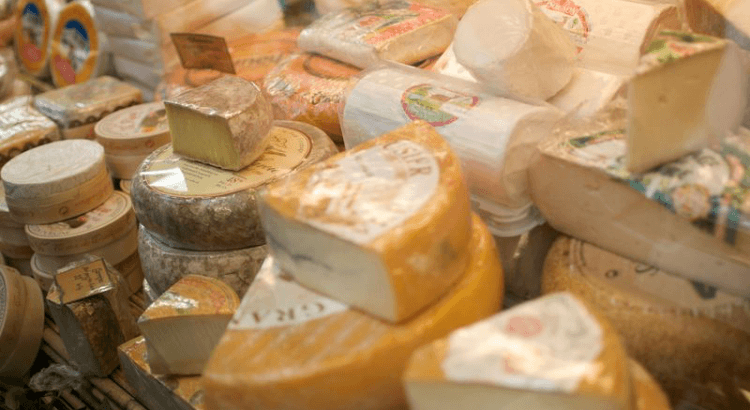

U.S. Cheese Market Demand Increasing Exponentially
Globally the cheese market is mainly driven by increasing consumption of dairy products included in daily diet of consumers.Increasing adaptation of European lifestyle and their food culture in U.S. is influencing the market growth.Applications of different types of cheese with various flavors in various sectors of food industries are supporting the product’s sale.Cheese is extensively used in convenience foods, ready-to-eat meals, fast-foods and even in confectionery products.The high demand of the product across these industries is seen as a potential opportunity for its market.
Increase in consumer acceptance of ethnic cooking, such as Italian Mexican, the demand for cheese and cheese products are expanding at an exponential rate.Being the largest cow producer in the world, U.S. is found to be a hub for fine qualities of cheese.The cheese varieties depend on the milk used as a raw material for cheese production.Large cow variety supports the high volume yield of milk which has a direct impact on the large volume of cheese production.Washington State itself in the U.S. is found to have nearly 273,000 dairy cows with varieties such as Jerseys, Guernseys, Brown Swiss and others.The increase in consumption of Italian and Mexican food preparations has raised the demand for cheese as cheese is one of the major constituent in these cuisines.For instance, pizza and pasta have become popular dishes consumed all over the world.Cheese is considered to be a vital ingredient in these food preparations.
Get a Sample Report Now
Latest Industry Updates
Dec 2017 Naturipe Farms has been awarded with New York Produce Show and Conference for its Naturipe Snacks product line that combines fruit, cheese and nuts into one portable package.
July 2017 Land O’Lakes has launched a new product range of organic cheddar cheese powder in order to respond the consumers demand for natural dairy ingredients free from food coloring and dyes.
April 2017 Dean Foods Company and KRAFT Macaroni Cheese have announced their collaboration to expand its business portfolio.
March 2017 Vermont Creamery has become independent operational subsidiary of Minnesota-based Land O’Lakes.This activity will help the company to produce fresh and aged goat cheeses, cultured butter and fresh dairy at the production unit.
[cpm10]
Leading Key Players
Key players are focusing on expansion of their cheese business.From six years, strategy of expanding the cheese business holds around 33% of strategy share by key players.Acquisitions and partnership are two main factors which are contributing more than 34% of strategy share as it helping company to enhance their cheese production capacity and to capture more market share in U.S. and other regions in North America.
The key players profiled in U.S. Cheese Market are
Associated Milk Producers Inc.(U.S.), Land O’Lakes, Inc.(U.S.), Dairiconcepts L.P. (U.S.), The Kraft Heinz Co. (U.S.), Leprino Foods Company (U.S.), Foremost Farms USA (U.S.) Dairy Farmers of America Inc.(U.S.)
Global Industry Segments
The U.S. cheese market has been segmented into type, form, packaging material, and distribution channel.
Regional Analysis
Overall cheese and curd import in U.S. has increased by 4.61% from the year 2012 to 2016.Italy is the major cheese importing country to U.S. has import share of 17% in the year 2016 which due to increasing popularity and consumption of Italian cheese in United States.U.S is importing more cheese form New Zealand and import of cheese from New Zealand has increased significantly.Import of cheese from France has declined by 3.55% from the year 2012 to 2016.Maximum cheese imports form U.S. are other countries which contributes around 50% of import share.
[bsa_pro_ad_space id=4]
Share on Facebook Tweet Follow us
Posted On: 2019-08-23T00:00:00
Posted By: Suraj Taur



Content Date: 2019-08-23
Download Date: 2021-07-09
Document ID: L0C04EP35